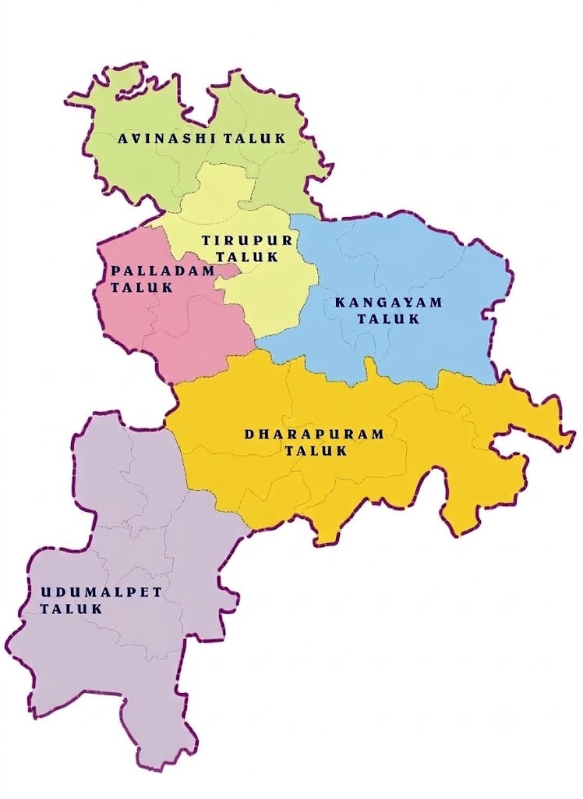

Predicting El Niño Stress on Borewells & the Noyyal Sewage Corridor (5,087.26 Sq.Km)
SDG 6 • Clean WaterSDG 3 • Public HealthZLD vs. Domestic Sewage GapSources: CGWB • TNWRD • IMD • TNPCB
Tab 01 • Summer 2025 Actuals
Baseline
18.4m bgl • 1,420 mg/L TDS

Tab 02 • Summer 2026 Trend vs. El Niño
Severe El Niño Shock
Depth: 28.6m bgl • TDS: 2,940 mg/L
Expected '26:19.2m • 1,550 mg/L
El Niño '26:28.6m • 2,940 mg/L
▼ -9.4m Drop▲ +89.6% Salinity Surge
Pacific ENSO Anomaly:+2.4°C (Severe El Niño)
0.0°C Normal+1.2°C Moderate+2.4°C Severe
Aquifer X-Ray • ZLD vs. Sewage Gap
SEWAGE PLUME DOMINATES INTAKE
The ZLD Paradox: Textile dye is 100% captured under Zero Liquid Discharge, but 120 MLD raw municipal sewage continuously infiltrates through the unlined Noyyal riverbed. El Niño cuts monsoon dilution by 38%, forcing sewage leachate directly into the deep intake.
Noyyal Corridor SalinityTDS
2,940 mg/LExpected: 1,550 mg/L
▲ +89.6% vs. Expected
Water Table DepletionDEPTH
28.6m bglExpected: 19.2m bgl
▼ -9.4m Deeper (+48.9% Faster Drop)
Untreated Sewage SeepageZLD GAP
78.4%Expected: 42.0%
▲ +86.6% Seepage Surge
Critical Breakdown WardsSDG 6 • 3
14 / 60 WardsExpected: 5 Wards
▲ +180% Immediate Testing Priority
01 • Expected Trend vs. El Niño TDS Trajectory
Summer 2023–2026
Spline trajectory plots multi-year gradual drift vs. sharp non-linear El Niño salinity surge (+89.6%).
02 • Salinity Spike by Noyyal River Proximity
% TDS Surge
Salinity explodes by >90% within 1.5 km of the unlined sewage corridor when monsoon dilution fails.
03 • Where Water Breaks First — Priority Wards
Click Ward to Locate
Ranked pre-monsoon intervention priority. Click any ward to illuminate its monitoring node on Center Map.